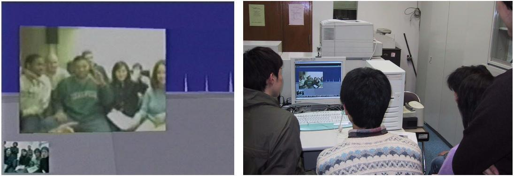

Our virtual city space system was used in a collaborative seminar course of Department of Social Informatics, Kyoto University and Department of Communication, Stanford University in the beginning of 2002. In this course, students worked on the experiments to observe how new communication tools on the Internet influence human psychology. This course was supported by this project and Keihanna Human Info-Communication Research Center, Communications Research Laboratory.
In the course, a team consisted of several students of each side, and two teams were formed. Both sides collaborated through whole process including planning a social psychological experiment, preparing tools for it, and running subjects. E-mail, text-based chat system, and also FreeWalk were utilized for keeping in touch with one another beyond the time difference. Figure 1 shows a meeting where students of each university enter into the FreeWalk space.
Because this course focused on cross-cultural communication, students selected topics of their experiments such as the difference of thinking style in Japan and US and the effects of computer characters' nationality on users. FreeWalk running on the computers of both sides was the environment for both experiments. Twenty American subjects and twenty Japanese subjects took part in each experiment. In the experiment which topic was the effects of computer characters' nationality, students analyzed the influence of the nationality of social agents in virtual spaces. We compared Japanese and American subjects' reaction to the agent with Japanese or American nationality cue. As the result, we found ingroup bias effects in Japanese subjects, who estimated Japanese agent to be more competent.

Figure 1. A meeting of the Kyoto and Stanford Student Groups in FreeWalk
Contact:
Hideyuki Nakanishi (nakanishi at i.kyoto-u.ac.jp) Dept. of Social Informatics, Kyoto University